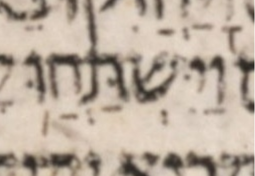

| bcv (link to tanach.us) | 1k9:9 |
| MPK | וַיִּשְׁתַּחֲוּ֥ |
| qere | וַיִּשְׁתַּחֲו֥וּ |
| at issue | ? |
| at issue English | unclear |
| folio col line | 3 10 |
I don’t see what motivates WLC’s a-note on this word.
I don’t see what motivates the a-note because the MPK has all the qere’s marks, as long as we interpret the MPK’s dot in the vav to be a shuruq dot not a dagesh.
The MPK suffix וּ֥ becomes ו֥וּ in the qere. In contrast, on closely-analogous words, gn27:29 and gn43:28 use a qubuts: וֻ֤ becomes ו֤וּ and וֻּֽ׃ becomes וּֽוּ׃ respectively.
BTW no shin dot is visible, although a shin dot might be hard to see here. The condition of the manuscript is not great here. The focus of the photograph is also not great here.